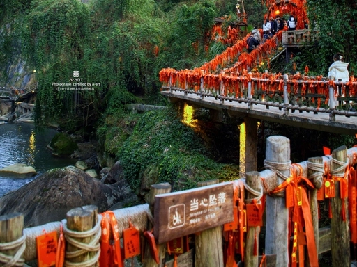
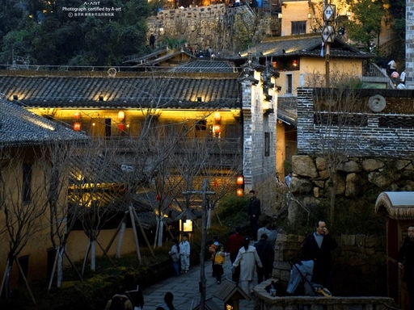
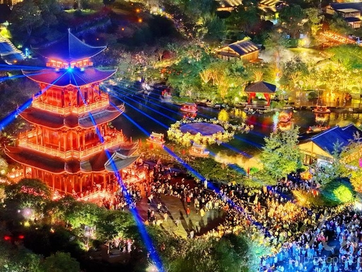
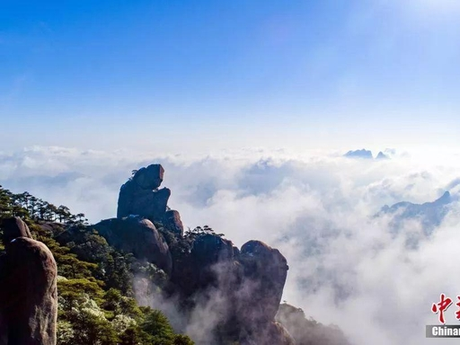
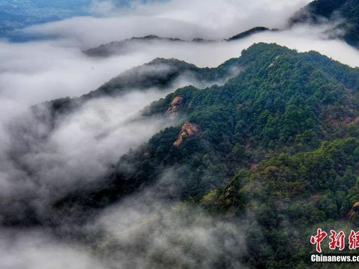

三清山是上饶核心旅游名片，世界自然遗产、国家5A级景区。景区花岗岩峰林奇绝，怪石、云海、松涛、佛光四大景观闻名天下，山岳风光雄奇秀美。山间道观、摩崖石刻相融自然，兼具自然风光与道教文化底蕴。

婺源江湾是国家5A级古村落景区，始建于隋代，文风鼎盛、人才辈出。村内古街、古宅、宗祠、亭台保存完整，徽派建筑错落有致，水系环绕村落。这里将古建文化、田园风光融为一体，漫步街巷感受千年古村的静谧雅致。

婺源篁岭因“晒秋”闻名全国，是网红乡村旅游打卡地。村落建在群山之间，天街九巷蜿蜒曲折，古民居依山而建。除晒秋景观外，还有梯田花海、玻璃栈道、民俗体验等项目，自然景观与民俗体验完美结合。

弋阳龟峰为世界自然遗产、国家5A级景区，以奇特丹霞地貌著称。山体形似巨龟，奇峰林立、碧水环绕，峰峦形态逼真，移步换景。景区生态优良，人文古迹点缀山间，集奇山、秀水、幽洞、古刹于一体。

上饶灵山被誉为“天下第三十三福地”，山岳连绵、主峰挺拔，山体奇石遍布，梯田、竹海环绕山脚。景区融合自然生态、道教文化、户外休闲于一体，登山可俯瞰赣东北田园全景，云海升腾时宛若仙境。
铅山河口古镇曾是明清时期繁华的水运码头、商贸重镇，享有“万里茶道第一镇”美誉。古镇保留完整的明清古街、码头、商号建筑，青石板路蜿蜒悠长，茶道文化、商贸历史底蕴深厚，成为特色文旅景区。